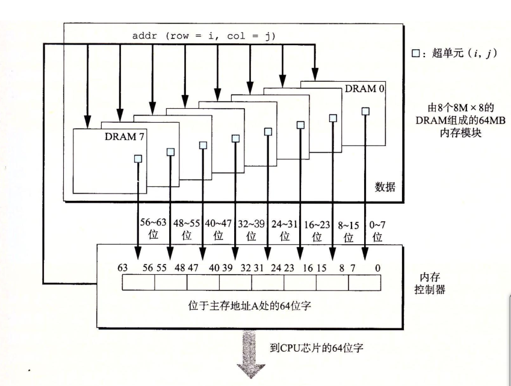
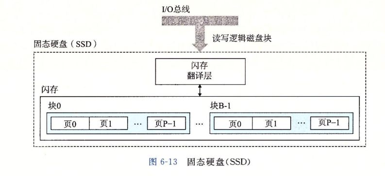

这里先说一下存储器系统：
寄存器 -----> 高速缓存 -----> 主存储
存储器对程序的性能有着巨大的影响，程序的运行就是对数据的不停的计算和搬移，其中最为耗时的就是程序对数据的搬移。因此，存储器对数据的存取速度是至关重要的。
CPU在访问寄存器中的数据只需要一个周期就可以访问到，在高速缓存中需要4-75个周期，如果在主存器上则需要上百个周期，如果在磁盘上则需要几千万个周期。
如果你理解了系统是如何将数据在存储器结构层次中上上下下移动的，你就可以编写自己的应用程序，使它们的数据存储在较高层次结构的地方，在那里CPU能更快的访问。
先展示出这我们要说的结构图：
静态RAM(SRAM),将一个位存储在一个双稳态的存储器单元里面，每个单元由6个晶体管组成。
SRAM得存储单元具有双稳态特性。只要有电，它就会永远的保存它的值，即使有干扰来扰乱电压，当干扰消除之后，电路就会恢复到稳定值。
动态RAM(DRAM),将每个位存储为对一个电容充电，电容小到30毫微法拉的电容。DRAM造的非常密集，每个单元由一个电容和一个访问晶体管组成。
DRAM存储单元对干扰非常敏感，当电容的电压被扰乱之后，它就永远不会恢复了，暴露在光线下也会导致电压改变。由于很多原因会导致电容漏电，所以使得DRAM单元在10-100毫秒时间失去电荷，由于计算机运行周期是以纳秒来衡量的，所以内存系统周期性的将DRAM中的数据读出来在写进去重新刷新内存每一位就可以了。
这种需要动态刷新的存储RAM就被称为动态RAM（DRAM）。
DRAM芯片中的单元被分成d个超单元，每个超单元都由w个DRAM单元组成。一个d*w的DRAM共存储了dw位信息。
这一部分比较难懂，主要是它描述的不清，我这里说一说我的理解：
一个DRAM总量被分为d个超单元，这d个超单元是以阵列的形式排列的，d的大小由行r和列c来决定，一般情况r=c=2的addr次方。假设地址线有a根，能传过来的最大地址值就是2的a次方，就可以表示2的a次方个行，2的a次方个列的一个矩阵，所以d就等于2的a次方的平方。每个超单元由w个DRAM基本单元组成，DRAM基本单元应该就是一个位。也就是一个超单元由w位组成，w的大小就应该看数据线的位数了。w=data位数。
以上是我的理解，欢迎一起探讨这一点。
DRAM被连接到内存控制器上之后，通过数据线每次传输w位数据。具体地址通过地址线发送两次地址数据，分别表示行和列，通过矩阵坐标来确定。第一次发送行地址称为RAS，获得行地址之后，将对应的行数据全部复制到内部行缓冲区，然后在获得列地址，通过内部行缓冲区中找到对应数据，通过数据线发送出去到内存控制器。
DRAM芯片封装在内存模块中，它以64位为块传送数据到内存控制器和从内存控制器传出数据。下图展示了内存模块传输数据的基本思想。

上图由8个DRAM组成一个整体，八个DRAM共用地址线，每个DRAM中一个超单元八根数据线，组合起来就是64根数据线，传输的64bit的数据也是八个DRAM中相同坐标的超单元的8位数据组成。
市场上有很多种类的DRAM，每一种都是生产厂家基于传统的DRAM单元，并进行了一些优化，提高访问基本DRAM单元的速度。
如果断电，DRAM和SRAM会丢失他们的信息。也就是它们属于易失的存储器。非易失的被称为制度存储器(ROM),实际上它们也是可读可写的。
数据流都是通过总线在处理器和DRAM主存之间来来回回传输数据的。每次传输数据的过程被称为总线事务，读事务：从主存传送数据到CPU。写事务：从CPU传输数据到主存。
读写事务都需要三步骤来进行：将地址放到总线上，读出地址，复制数据。
磁盘能保存大量的数据，读取速度是毫秒级的，比DRAM慢了10万倍，比SRAM慢了100万倍。
磁盘是由多个盘片构成的，一个盘片有两个盘面，一个盘面上面有很多同心圆的磁道，磁道上面又分为许多个扇区，所有盘面上相同半径的磁道集合成为一个柱面。盘片以一个固定的旋转速率进行旋转（5400~15000转每分钟）。
一个错可以记录的最大位数称为它的最大容量，也就是我们说的容量。容量的决定因素有：
因为一个磁盘有多个盘片，一个盘片有两个盘面，一个盘面上有很多磁道，每个磁道上有很多个扇区，一个扇区上存储一定的字节数。因此磁盘容量的计算公式如下。
磁盘容量 = 每扇区的字节数 * 每磁道的扇区数 * 每盘面的磁道数 * 每盘片的盘面数 * 磁盘的盘片总数
磁盘可以用来读数据，写数据。使用读写头来进行读写数据。读写头连接到一个传动臂的一端，通过沿着半径轴前后移动，这个传动臂，驱动器可以将读写头定位在盘面的任何磁道上，这样的机械运动称为寻道。 读写头定位到期望的磁道上后，当磁道上的每一位通过它下面时读写头可以感知到这个位的值，也可以修改这个位的值。磁盘以扇区大小的块来读写数据，对扇区访问的时间，有三个主要的部分：
磁盘的构造如此的复杂，操作系统看到的可不是这样的，在操作系统来看，磁盘就就是一个逻辑块序列，逻辑块的编号为0，1，2，... ，MAX-1。每个逻辑的大小等于一个扇区的大小。
这样的逻辑块序列是怎么实现的呢？ 原来磁盘上封装了一个小的硬件设备叫磁盘控制器。是它在维护着逻辑块号与真实的磁盘扇区之间的映射关系。当操作系统要进行读写某一个逻辑块时，磁盘控制器将逻辑块号翻译成(盘面，磁道，扇区)三元组，然后可以唯一的标识对应的物理扇区。然后进行操作。
I/O设备是一个统称，其包括图形卡，监视器，鼠标，键盘和磁盘这样的输入输出设备，都是同过I/O总线连接到CPU和主存上。
主机总线适配器将一个或多个磁盘连接到I/O总线，使用的是一个特别的主机总线接口定义的通信协议。有两个常用的磁盘接口是SCSI和SATA。SCSI磁盘通常比SATA磁盘驱动器更快但也更贵。SCSI主机总线适配器可以支持多个磁盘驱动器，SATA适配器只能支持一个驱动器。
这里简单的说一下磁盘的访问吧，对于磁盘数据的读过程如下：
固态硬盘（SSD）是一种基于闪存的技术。其结构如下图：

其中的闪存翻译层和传统的旋转磁盘的磁盘控制器的功能相类似。
SSD的读写性能都比传统的旋转磁盘要好，在未来是传统磁盘的替代品。
一个编写良好的计算机程序肯定是具有良好的局部性的。那么怎么定位良好的局部性呢？
局部性原理：计算机程序倾向于引用临近于其他最近引用过的数据项的数据项，或者最近引用过的数据项本身。这种倾向性被称为局部性原理。
局部性分为时间局部性和空间局部性。在良好的时间局部性中，被引用过一次的内存位置很可能在不远的将来再被多次引用。在良好的空间局部性中，一个内存位置被引用了一次，那么程序很可能在不远的将来引用其附近的一个内存位置。
我们先看一段求和代码：
int sumvec(int v[N])
{
int i, sum = 0;
for(i = 0; i < N; i++)
{
sum += v[i];
}
return sum;
}
对于数组来说，因为数组的地址是连续的，而且每次取得数组地址都是挨个连续取，所以具有良好的空间局限性。但是每个变量只取出使用一次，所以时间局限性很差。同样对于sum变量，for循环中连续被取用，所以具有良好的时间局限性。sum是一个标量，所以没有空间局限性。
我们来看二维数组的求和代码：
代码一：
int sumArrR(int a[M][N])
{
int i, j, sun = 0;
for(i = 0; i < M; i++)
{
for(j = 0; j < N; j++)
{
sum += a[i][j];
}
}
return sum;
}
代码二：
int sumArrC(int a[M][N])
{
int i, j, sum = 0;
for(j = 0; j < N; j++)
{
for(i = 0; i < M; i++)
{
sum += a[i][j];
}
}
return sum;
}
对比两段代码，功能都是将数组里所有数值的和。就单从数组来说，在空间局限性上，代码二的空间局限性很差，因为数组的读取地址不连续，是跳着读的。相比之下，代码一的的空间局限性就很好，每次读取的数组数据都是连续地址上的。时间局限性上都还好，这里就不分析了。
看上去差别很小，在代码实际运行中，执行效率就会差很多。所以我们编程的时候，稍微注意一下，就能提升代码的性能。
评价程序中局部性的一些原则：
存储器结构的中心思想是，对于每个k，位于k层的更快更小的存储设备作为位于k+1层的更大更慢存储设备的缓存。依次类推，直到最小缓存---CPU寄存器组。k层缓存着k+1层的一个子集。
如果程序需要第k+1层的某一个数据对象d，它会首先在当前存储的k层查找d，如果d刚好在k层中，就是我们说的缓存命中。这样比去k+1层读取数据要快得多。
如果程序没有在k层中找到对象d，就是我们说的缓存不命中，这样就会去k+1层读取出包含d的数据块，然后保存到k层的缓存中，如果k层的缓存区满，那么会覆盖掉一个缓存区的块。
k层本来就是空的导致的数据不命中称为 冷不命中。
只要不命中就会执行某个放置策略，将k+1层的数据放在k层缓存区中，由于放置策略引起的不命中称为 冲突不命中。
当访问的工作集大小超过了缓存大小时，缓存会经历 容量不命中。也就是缓存太小了，不能处理这个工作集。
存储器层次结构的本质是，每一层存储设备都是低一层的缓存。缓存管理就是要将缓存划分成块，在不同层之间传输块，判定是否命中并处理它们。管理缓存的逻辑可以是硬件，软件或者两者的结合。大多数时候，缓存是自动运行的。不需要我们代码中显示的去行动。
这一篇主要是介绍一下存储器的种类，特点，以及一些细节功能。可以更加了解存储是怎么一回事，其实这里面介绍的还只是一些大概。真正存储是怎么存储数据的，这些数据在存储器上是以怎么样的一种形式存储的，还需要我么自己去找资料了解。当然，我们在写代码的时候，直接基于文件系统上面将内容写入某一个文件中就可以了，底层是怎么管理的压根接触不到。稍微底层点的程序员可能会对存储块进行操作，同样还是调用内核的读写接口，进行块设备的文件进行读写。但是，关于磁盘的一些基本认识，我们还是有必要去了解一下的，因为这样能更好的理解我们的程序是怎么运行的，也可以从根本上去优化我们代码的效率。
本文来自《深入理解计算机系统》 第六章 存储器层次结构